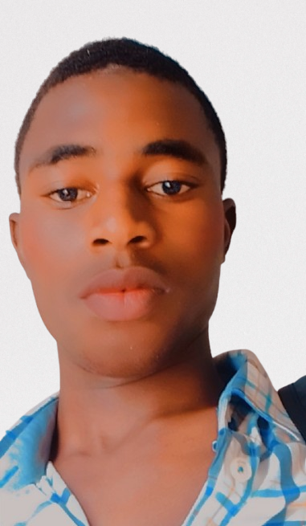

About Me
Hi, I’m Abdussamad Kamaladdin, a passionate and disciplined Software Engineer in Building — actively sharpening my skills and crafting real-world solutions through code, creativity, and continuous learning.
Currently pursuing a BSc in Software Engineering at Northwest University, Kano, I am building a strong foundation in full-stack development, data analysis, and digital product design. I bring together technical know-how, design thinking, and a love for innovation to develop meaningful, impactful projects.
Beyond the screen, I also have experience in male clothing design and automobile body work, which adds a unique layer of practical creativity to how I approach software.
I’m constantly learning, building, collaborating, and striving to make a lasting impact — one project, one solution, one line of code at a time.
My goal is to become a full-stack developer and use data and digital tools to solve real-world problems and make a lasting impact.